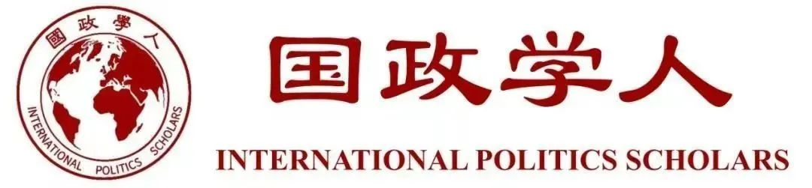

收录于合集

作品简介
【作者】 Christine Hackenesch，德国发展研究院国际-跨国合作项目负责人，主要研究方向为欧非关系，中非关系等。Julia Bader，阿姆斯特丹大学政治科学院助理教授，主要研究方向为中国外交关系，国际关系与外交政策等。
【编译】 唐一鸣（国政学人编译员，北京大学国际关系学院研究生）
【校对】 杨朔 宋翔宇
【审核】 梁坤
【排版】 卢奕财
【美编 】臧泽华
【来源】 Hackenesch, C., & Bader, J. (2020). The Struggle for Minds and Influence: The Chinese Communist Party’s Global Outreach. International Studies Quarterly ,doi:10.1093/isq/sqaa028
期刊简介
《国际研究季刊》（International Studies Quarterly）是国际研究协会的旗舰期刊，由牛津大学出版社每年发行四期，旨在发表与国际研究中重要理论性、实证性、规范性主题相关的领先学术成果。根据Journal Citation Reports的数据，2018年该期刊的影响因子为2.172。
中联部对中国外交的作用
The Struggle for Minds and Influence: The Chinese Communist Party’s Global Outreach
Christine Hackenesch
Julia Bader
内容提要
本文的主要研究对象是中国对外关系中常被忽视的机构，即中共中央对外联络部（International Department）。利用公开文件，作者系统分析了21世纪初以来中联部的作用。中联部与全球政治精英保持着广泛的联系，为中国外交做出了重要贡献。党际关系不仅是增进中国外交政策利益的额外渠道，而且对中国共产党的形象提升有很大帮助，使得中国更有效地推动全球秩序改革。此外，通过中联部，中国可以向其他国家更好得分享其经济现代化和执政经验。这篇文章系统分析了中国提升国际影响力、拓展对外关系的方式。并且文章对中联部的会议文件进行了定量分析，以便于读者更好地了解其与外国其他政党互动的模式。
01
导言
2012年之后，中国实力变得更加强大，对外交往更加自信，决策更加富有眼光，开启了中国崛起的“新时代”。在2017年中共十九大上，中国表示愿与其他国家分享执政经验。近年来，中国在维护其政治和经济利益方面更加果断，在南海问题、一带一路倡议等行动中，取得了瞩目的成就。中国还通过投资媒体平台、孔子学院以及众多交流项目，改善自己的形象。
中央外联部是推动“新时代”中国崛起的关键角色。中联部的活动，早在20世纪50年代就开始了。党际关系一直是中国外交的重要组成部分。进入21世纪后，在中国共产党在加强其内部凝聚力的同时，中联部也加强了其与外国政党的联系。中联部建立了广泛的全球网络，与160多个国家和地区的400多个政党保持密切联系。中联部与外国政党定期举行会议，为其他国家的干部提供培训。党际联系是“中国总体外交的重要组成部分，具有独特优势，其作用不可替代”。政党渠道有其优势所在，它不仅为政府高层提供了联系渠道，还能让在常规外交事务领域之外的重要政治人物彼此接触。
关于中国外交政策的研究成果，往往忽略了对党际关系的研究，既有研究大多关注的是国家行为体以及政府间关系。实际上，非政府行为体也很重要。本文分析了作为独特外交方式的党际关系，并通过最新经验数据加以阐释，这有助于更好了解中国外交的全貌。本文的跨区域分析显示，中联部在亚洲最为活跃，其次是欧洲和非洲。中联部的主要政党伙伴有：越南、老挝等兄弟党和国家；撒哈拉以南国家中具有深远影响的非洲政党；经合组织成员国（例如日本、德国）的部分政党。中联部与外国执政党和反对党都保持合作，但更关注前者。左翼政党仍然是中联部的主要合作伙伴，当然中联部与其他类型的政党也有合作。定量分析表明，党际关系有利于增进中国外交政策利益和中国共产党自身利益，政党渠道逐渐成为中国参与国际体系、推动国际体系改革的工具。
02
**
**
中国 共产党对外联络部
及其外部关系
中联部的主要工作包括提供建议、组织领导人出访活动、接待国内外党派代表团、为其他国家的政党和党员提供帮助。2005年，中联部有约300名工作人员，还有一些人在驻外使馆工作。中联部与南半球国家的政党的交往早已有之，早在上个世纪50、60年代就与亚非国的政党保持联系。60年代初中苏关系恶化后，中联部与苏联有过竞争，双方争夺其他社会主义国家的支持。1978年改革开放后，中联部才开始加强与非共产党政党的联系，并开始与世界各地的社会民主党和其他政党建立关系。同时，中联部开始将一部分外交工作移交到外交部。90年代初，中联部加强了同非共产党政党的接触。进入21世纪，中国共产党的对外关系重获关注。中国希望通过加入世界贸易组织、实施企业“走出去”战略，以及对公共外交和软实力的大量投资，树立积极形象，抵制国际社会的批评并减轻其对“中国威胁”的担忧。党际关系是公共外交的重要部分。2012年之后，中国致力于塑造全球规范和国际制度。为使中国外交适应新的角色，党中央对外交决策进行了机构改革，突出了党的领导的重要性。
03
量化分析
中联部在官网上公示了自2002年起其高级官员参与的国际高级别活动，包括互动对象、时间地点以及对部分活动主题的简短描述。本文共下载了5080个（英语）新闻报道，其中包含有关党际访问或与其他外国代表接触的内容，以及表示祝贺或慰问的外交辞令。中共关于其活动的精心报道与中国外交政策的战略变化相吻合，是为体现中国良好的外部关系。本文的数据来源，除了中联部的公开信息外，还包括对外国党际关系参与者的采访、当地新闻报刊及互联网资讯，特别是与中国存在争议的国家的相关情况。本文统计了2002年至2017年间中联部与外国代表团之间直接互动的3658次联系，其中，与国外政党联系2610次，其余则是与研究机构、国王或外交官的联系。在此期间，中国共产党与国外党派和非党派代表的联系数量大幅增加（图1），特别是2012年之后，中联部的活动迅速增加。党际联系频率明显高于非党际联系。根据公开文件，中共在2002年至2017年间与161个国家的462个不同政党建立了联系。中联部在北京接待的代表团多于出访团（图2），因其出访所需资源投入更大。如图3所示，中联部与各方的互动程度在世界各地有所不同（每个圆圈的大小表示在特定国家/地区与各方互动的绝对数量），其活动集中在东亚和东南亚、欧洲和撒哈拉以南的非洲地区。中联部与金砖国家也保持经常联系，尽管主要是与俄罗斯和南非的关系（见表1）。在欧洲，中共与德国以及中东欧国家的政党保持密切合作。中联部只与少数国家没有建立党际联系，而是与其王室、政府、专门委员会、行业代表等进行联系。中联部与美国政党的接触直到2010年才开始，至今仍很有限，其原因在于美方缺乏兴趣。中联部寻求通过与总部设在美国的智库（特别是美国外交政策委员会或东西方中心）进行密切合作来弥补疏漏。图3显示了每个国家/地区与中联部进行联系的参与方的数量（分段的大小与给定参与方的联系数量成正比）。中联部有选择性地挑选合作伙伴：在大部分国家/地区（主要在亚洲），中联部联系的政党不超过三个，在少数国家/地区（非洲）中，其互动仅针对一个政党。在中联部与各方互动的频率上，其选择性也显而易见。中联部与某些政党保持定期联系，而与大部分政党仅仅曾经会晤一至两次。图4反映了中联部与各党联系次数的分布情况，其与462个参与方（大多是民主和混合政体国家的反对党）的接触大多不超过两次。系统分析表明，中联部与其他国家的执政党的联系，要比与反对党的联系更加密切。基于政治机构数据库，本文发现，中联部与其他国家执政党的联系占比超过70％（1,876次会议），与反对党的联系占28％（730次会议）。跨国分析表明，中联部是否与反对党接触，在很大程度上取决于该国的政治体制（见图5）。中联部主要与民主国家中曾执政或有望在未来执政的反对派政党联系。而在混合政体的国家中，中联部主要与执政党联系，与反对党的联系并不多。这说明，相似的意识形态是影响政党交往的重要因素。与中联部联系最为密切的20个政党中，大部分都有社会主义根据，或者与中共有一定历史联系。此外，中联部继续与部分非洲政党保持联系，反映了中国的地缘战略以及政治经济利益。除双边会议外，中联部还积极参与并推动多边政党论坛的发展，包括亚洲政党国际会议、中拉政党论坛、世界政党高层对话会等。这些活动大大提高了中国的影响力。
04
**
**
党际关系：从外交利益到促进中国的全球崛起
就推进中国的外交政策目标而言，党际联系比政府间联系更具优势。政党渠道更加灵活，不受外交协议的限制，而且活动范围更广。由于中联部拥有广泛的全球网络和密集出访机会，并提供了在非正式情况下接触重要政治人物以及未来领导人的途径，政党渠道在短时间内便吸引了众多外国政治精英。21世纪初以来，中国的外交关系一直以维护国家主权、发展利益为主导。本文通过对具体示例的分析，证明政党渠道如何有助于推进这些目标及其变化情况。新中国成立以来，“一中政策”一直是外交的核心问题。中国认为其与外国政党的接触有利于推进“一中政策”，因为这样做可以与那些没有同中国建立正式关系的国家及其政党进行交往，为未来建交铺平道路。2002年至2017年期间，中国与大多数承认台湾的国家没有建立外交关系，但其中部分国家的政党成员曾被邀请至中国或参加中国主办的政党论坛。2013年之后，中国对“一中政策”的话语策略发生了重大变化，开始较少提及。这可能是因为，台湾被孤立已经是既成事实。鉴于与台湾保持关系的国家数量极其有限，中国可能不再认为有必要反复提醒合作伙伴这一核心利益。此外，中国还可以利用党际关系，来维护国家的核心利益，抵制其他国家干涉内政（图6）。
政党渠道还推动了中国在国际事务中发挥更加积极的影响。传统上，政党渠道一直是外国政治精英熟悉中国最新政策概念的工具，中国的许多政治思想和主张都是通过政党渠道传播的。“一带一路”倡议就是一个典型例子，中联部可能是促进这个倡议的关键部门。2014年至2017年期间，中共与390多个政党之间的会议的议题，都包括了“一带一路”倡议（图7）。中联部还在北京举办了一系列国际会议，以解释这一倡议并寻求支持。
****最后，维护经济利益也是中联部的目标。中联部官员经常会见外国企业协会以及各行业高层人士，以促进特定产业以及中国各省市的经济发展。自2009年以来，中国各省轮流主办了一个针对西亚和北非国家的中小企业论坛。2010年，在扬州市组织了一次商务会议，以加强与海湾国家在石化行业的合作；并通过与非洲国家之间的农业合作会议，来帮助中国农业部在非洲建立网络。
05
**
**
推动政策学习和扩散
促进（外交）政策利益和软实力并不是推动中联部与外国党派发展关系的唯一考虑因素，党际关系也是政党之间政策传播和组织学习的工具。自2014年以来，中国更愿意分享有关中国政治制度的经验，在党派层面上传播“中国模式”。自改革开放以来，中国一直渴望从其他国家的成败中吸取教训，以免其经济改革影响政治稳定。中国共产党主要向他国政党学习执政经验，研究了苏联和古巴的情况以及新加坡的政党执政情况。在经济和社会政策方面，中国共产党对经合组织成员国进行了深入研究，特别是新西兰、挪威和芬兰等欧洲国家。2014年是一个转折点，在这一年之前，中国更倾向于学习其他国家；在这一年之后，中国主要集中于向其他国家分享自己的发展经验（图8）。最初，中国主要向其他国家分享经济发展的经验，近年来开始逐渐分享执政经验。自2014年以来，外国政党不仅希望学习中国的经济现代化经验，还希望学习中共在干部选拔、纪律监察和反腐斗争中的经验。加强与中国共产党的联系是各国加强与中国的经济合作或促进其他外交政策利益的手段。从新闻报道中可以明显看出，中国共产党越来越把党际关系视为分享其执政经验的渠道。中国共产党最近开始进一步将其党建对话制度化，扩大针对外国政党的理论研讨会，并在干部培训上投入更多资源。干部培训、党校交流建设已成为中国共产党与越南等亚非国家政党关系的一部分。
06
**
**
结论
自21世纪初以来，中联部在很大程度上有目的地加强了其在全球的活动范围。一方面，中联部战略性地扩展了其在全球的网络。另一方面，中联部为政党合作引入了新模式。此外，中联部日益重视建立针对外国党员干部的培训计划。
提高中联部的作用，也是近几年中共领导方式改革的一部分。中联部的国际活动有若干目标。召开会议可以用来促进和保护中国的核心利益，如台湾和南海。政党会议是一种公共外交工具，可以树立中国的良好形象，并为中国的全球崛起营造良好的国际环境。此外，中共中央为中联部的活动提出了两个新目标，即改革国际体系（这在推广“一带一路”倡议中最为明显）以及分享中国共产党的执政经验。
党际关系既非新兴事物，也非中国独有。中联部之所以成就非凡，是因为它建立了庞大的网络，并且投入了较多资源。今天，各国在政治制度、权力和国际影响力等方面的竞争正在日益激烈，中联部的作用越来越大。将分析对象从国家层面转移到政党层面，并研究跨国政党的合作，将为国际关系学和比较政治学提供新的研究视角。
译者评述
作者认为，中联部对于中国的外交工作有很高的战略意义。同时，中国投入了大量的财务和行政资源来保持其与全球各方的联系。中联部的作用主要体现在促进外交政策利益，以及学习和传播政治经验。尽管近年来中联部的作用越来越大，但学界很少进行相关研究，尤其是应该多研究其驱动因素和影响。
文章观点不代表本平台观点，本平台评译分享的文章均出于专业学习之用, 不以任何盈利为目的，内容主要呈现对原文的介绍，原文内容请通过各高校购买的数据库自行下载。
**
**
**
**
**
**
添加 “国小政”微信
获取最新资讯


国政学人
支持学术公益与知识传播
微信扫一扫赞赏作者 __赞赏
已喜欢，对作者说句悄悄话
取消 __
发送给作者
发送
最多40字，当前共字
上一页 1/3 下一页
长按二维码向我转账
支持学术公益与知识传播
受苹果公司新规定影响，微信 iOS 版的赞赏功能被关闭，可通过二维码转账支持公众号。